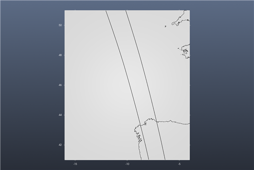
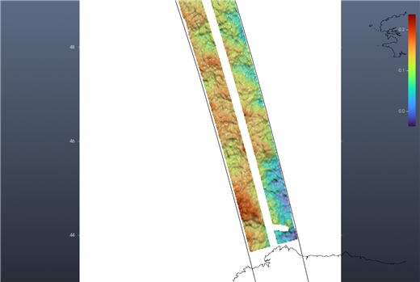
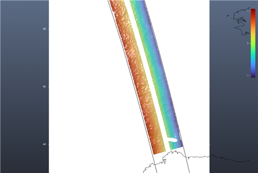
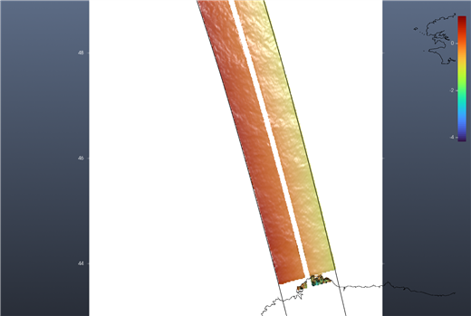
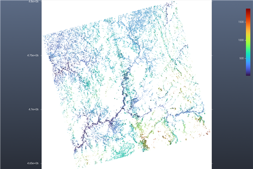
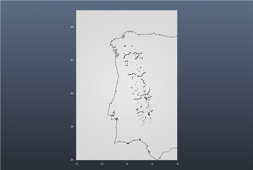

Tutorial: SWOT sea surface and water heights
Satellite → SWOT… — the green ? at the bottom of the dialog opens this page.
This tutorial goes through four real examples, then explains every variable the dialog offers. The reference for each button is the SWOT page.
What you need:
- a free NASA Earthdata account, saved once in the dialog's Accounts tab (for the L2 products: ocean, raster, rivers, lakes);
- an AVISO+ account, saved in the same tab, only for the L3 ocean products.
Searching never needs an account; downloading does.
Example 1 — The ocean: sea surface height anomaly in the Bay of Biscay
Open Satellite → SWOT… on an empty window.
Region: W −14, E −6, S 43, N 49. Product: LR sea surface height, Basic (2 km). From/To: any month since July 2023 (here September 2026).
Press Find the passes. The files are listed in Pass, and the swaths of their passes are drawn over a map of the region: two parallel strips, 50 km wide each, with the 20 km gap under the satellite between them.

Press Pick a pass and click one of the swath lines (or right-click the line and choose Show this pass (SWOT)). The pass is downloaded (about 10 MB) and its Variable, here
ssha_karin, is gridded over the region at 0.02° and shown.
That is the sea surface height anomaly: a few tens of centimetres of ocean eddies and fronts, 0 to 0.24 m on this pass.
Why the two options under it matter
The same pass, without the Crossover correction (unticked):

The swath now goes from −1 m on one edge to +1 m on the other. That is not the ocean: it is the instrument's roll error, which the L2 heights still carry, and which the file's own height_cor_xover removes. Measured on this pass, the scatter over the swath falls from 0.63 m to 0.05 m once it is added. Leave the box ticked for the L2 heights; it does nothing to the other variables, and the L3 products (example 2) are already corrected.
And with Quality set to Good and suspect instead of Good only, a few coastal pixels flagged as suspect come in with values of several metres and stretch the colour scale over them (−4.2 to +1.2 m on this pass, against −1.1 to +1.1 m with Good only; both without the crossover correction):

Start with Good only; widen it only when you need the coast.
Example 2 — The same ocean, already calibrated: AVISO's Level 3
Choose Product LR sea surface height L3, Basic (AVISO, 2 km) and press Find the passes again: the files now come from AVISO's catalogue (no login needed to search). Picking a pass shows ssha_filtered: the same kind of anomaly, already calibrated, edited and with the measurement noise removed by CNES/CLS. The Crossover correction box is greyed out: it does not apply. Downloading needs the AVISO+ login.
Example 3 — Rivers and lakes as a water-elevation raster
Product: HR water surface, Raster 250 m (or 100 m), a region over land, e.g. W −10, E −6, S 36, N 44. Each file is a 128 km tile in its UTM zone (UTM29T 040F in the Pass list). Picking a pass shows its tile's wse — water surface elevation above the geoid, in metres — on the tile's own UTM grid, with its own axes in metres. Only water pixels have a value: here the rivers and reservoirs of Galicia and northern Portugal (42–43.4° N), from about 15 m near the sea to several hundred metres inland. With Good only the scattered isolated pixels go away.

Example 4 — Rivers and lakes as lines and outlines
Product: HR rivers, reaches (shapefile), HR rivers, nodes (shapefile) or HR lakes, prior lakes (shapefile). Each file is one pass over one continent (EU in the Pass list). Picking a pass draws the river reaches (lines), the river nodes (points) or the lakes (outlines) that lie in the region, as ONE layer over what the window already shows. Hovering a feature shows its id and the value of the chosen Variable, e.g. reach_id 21603400064 wse = 123.25 m, or no value where SWOT measured nothing on that pass.

What the variables are
The Variable list shows the usual ones first, then everything else the file holds. All heights are in metres. The descriptions below are the files' own (their long_name and comments).
LR sea surface height, Basic and Expert (L2, NASA)
| Variable | What it is |
|---|---|
ssha_karin | Sea surface height anomaly: the height with the mean sea surface, the tides (solid earth, ocean, internal), the pole tide and the atmospheric (DAC) effect removed. The one to look at for currents and eddies. Use with the crossover correction. |
ssh_karin | Sea surface height above the reference ellipsoid, fully corrected for the measurement (troposphere, sea state bias) but with nothing geophysical removed: it is dominated by the geoid (tens of metres). |
ssha_karin_2, ssh_karin_2 | The same two, with a model wet-troposphere correction instead of the radiometer's. Use them near the coast or wherever the radiometer is unreliable. |
mean_sea_surface_cnescls | The CNES/CLS mean sea surface that ssha_karin subtracts. |
geoid | Geoid height. ssh_karin − geoid approximates the absolute dynamic topography. |
internal_tide_hret | The coherent internal tide (HRET model) removed from the anomaly. |
height_cor_xover | The crossover calibration the dialog adds when the box is ticked. Show it on its own to see the error it removes. |
distance_to_coast | Distance to the coast (m). |
num_pt_avg | Number of samples averaged into each 2 km pixel. |
sig0_karin (Expert) | Radar backscatter coefficient σ0 of the sea surface. |
swh_karin (Expert) | Significant wave height from KaRIn. |
wind_speed_karin (Expert) | Wind speed from KaRIn. |
Quality: <variable>_qual is a set of flags. Good only keeps pixels with no flag; Good and suspect also keeps those flagged only as suspect.
LR sea surface height L3 (AVISO)
| Variable | What it is |
|---|---|
ssha_filtered | Sea surface height anomaly, calibrated and edited, with the measurement noise removed. The one to look at first. |
ssha_unfiltered | The same before the noise removal. AVISO recommends it if you use your own mean sea surface. |
ssha_unedited (Expert) | Calibrated but without the editing: for events (storms, hurricanes) the editing would remove. |
mdt | Mean dynamic topography. ssha_filtered + mdt is the absolute dynamic topography. |
ugos_filtered, vgos_filtered (Expert) | Absolute geostrophic velocity, east and north components (m/s). |
ugosa_filtered, vgosa_filtered (Expert) | Geostrophic velocity anomalies (m/s). |
mss, ocean_tide, dac, internal_tide (Expert) | The mean sea surface and the corrections already applied. |
sigma0 (Expert) | Radar backscatter. |
Quality: quality_flag, one code per pixel. Good only keeps 0. Good and suspect keeps codes up to 30, AVISO's own advice for events such as hurricanes.
HR water surface, Raster (L2, NASA)
| Variable | What it is |
|---|---|
wse | Water surface elevation above the geoid, fully corrected. |
wse_uncert | Its uncertainty. |
water_area | Water surface area of the pixel (m²). |
water_frac | Fraction of the pixel that is water (0–1). |
sig0 | Radar backscatter σ0. |
inc, cross_track | Incidence angle (degrees) and cross-track position (m) of the pixel. |
geoid, solid_earth_tide, load_tide_fes, load_tide_got, pole_tide, model_dry_tropo_cor, model_wet_tropo_cor, iono_cor_gim_ka, height_cor_xover | The geoid and the corrections already applied to wse. |
n_wse_pix, n_water_area_pix, n_sig0_pix | Number of measurements aggregated into the pixel. |
dark_frac | Fraction of the area that is dark water (water the radar barely sees). |
layover_impact, ice_clim_flag, ice_dyn_flag | Layover error estimate and ice flags. |
Quality: <variable>_qual: 0 good, 1 suspect, 2 degraded, 3 bad.
HR rivers and lakes (shapefiles, L2, NASA)
| Attribute | What it is |
|---|---|
wse | Water surface elevation above the geoid (reach / node: fitted; lake: lake average). |
wse_u | Its total one-sigma uncertainty. |
width | River width (m). |
slope | Water surface slope along the reach (m/m). |
dschg_c | Discharge from the consensus algorithm (m³/s). |
area_total | Total water area including dark water — m² for reaches and nodes, km² for lakes. |
wse_std (lakes) | Spread of the elevation over the lake's pixels. |
reach_id, node_id, lake_id | Identifiers in the SWOT river (SWORD) and prior lake databases. |
Quality: reach_q, node_q, quality_f: 0 nominal, 1 suspect, 2 degraded, 3 bad. A value of −999999999999 in a file means "not measured on this pass", shown as no value.
Tips
- One SWOT cycle is 21 days: the same passes come back over the same place every 21 days, so a month holds one or two looks at each pass.
- The LR files are whole passes, pole to pole: the region only decides what is gridded, so a small region is fast and a large one takes longer.
- A file is downloaded once into the Folder;
(on disk)in the Pass list marks it. - A new Find the passes replaces the previous swaths. The swath lines are guides: right-click one for Show this pass (SWOT).